Food
One thing we do is food. But not just food. We do food experiences. Come hungry, come curious, because we are serving up some strange dishes that will quickly become favorites, if you just give us a chance.
Try our special juice with mystery pulp halloween special, rise and shine with our fantastic feggs (fake eggs), enjoy a steamy winter night in with Swedish glögg mulled wine, consume a hearty red lentil dal vegan pancake that will hold you down for all three meals, sip on a mushroom powder and algae-enriched green smoothie potion, or take delight in our world-class matcha affogatos.
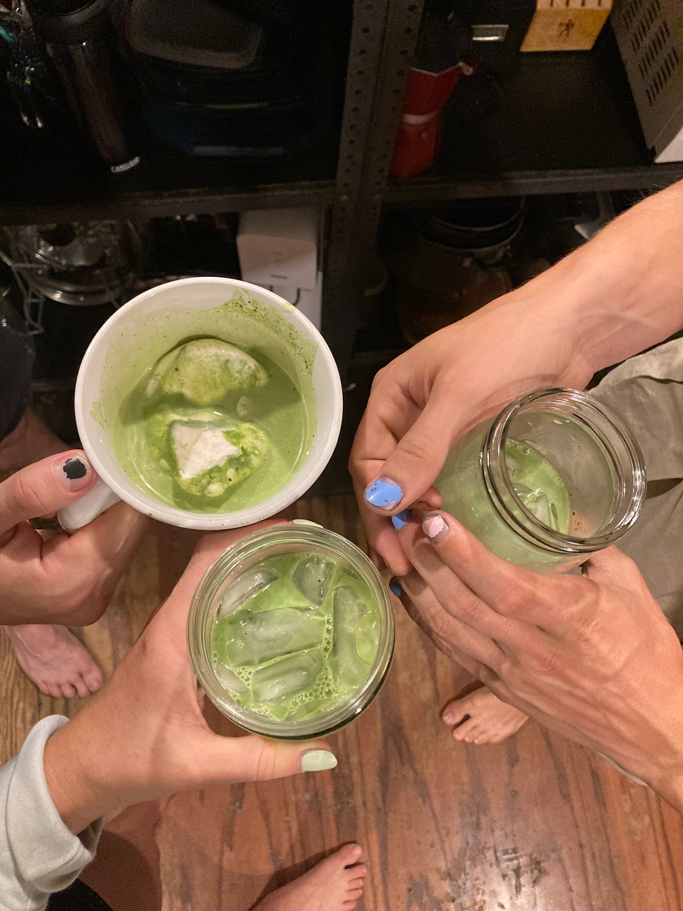
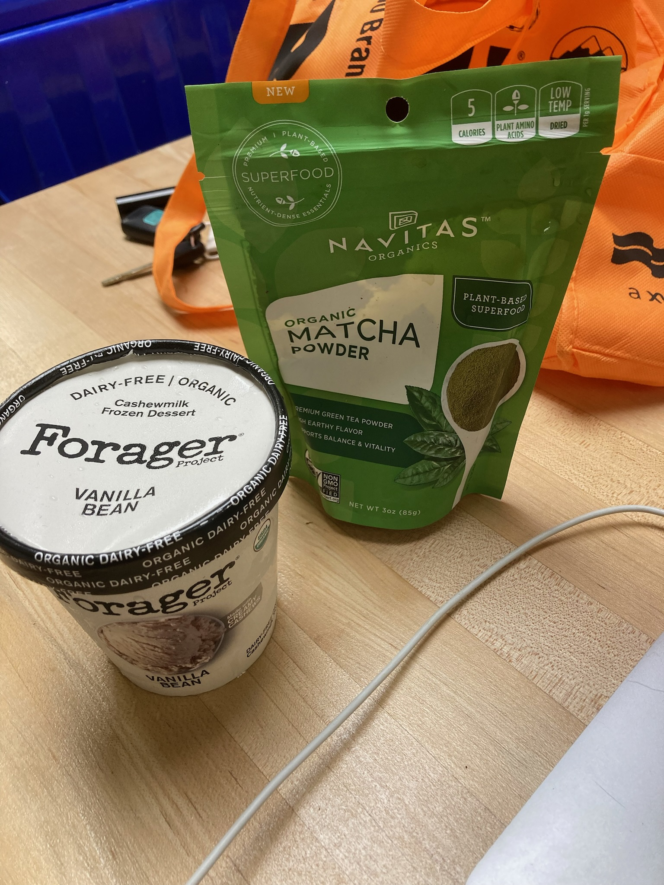
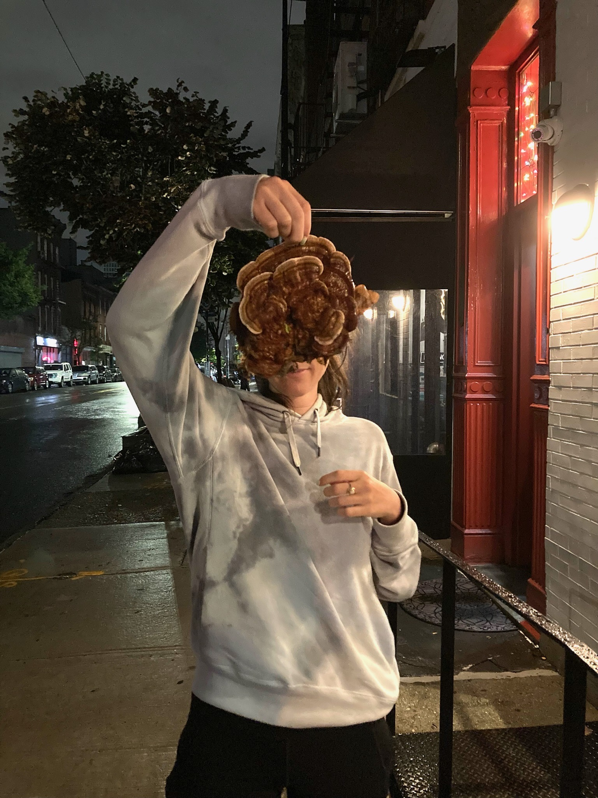
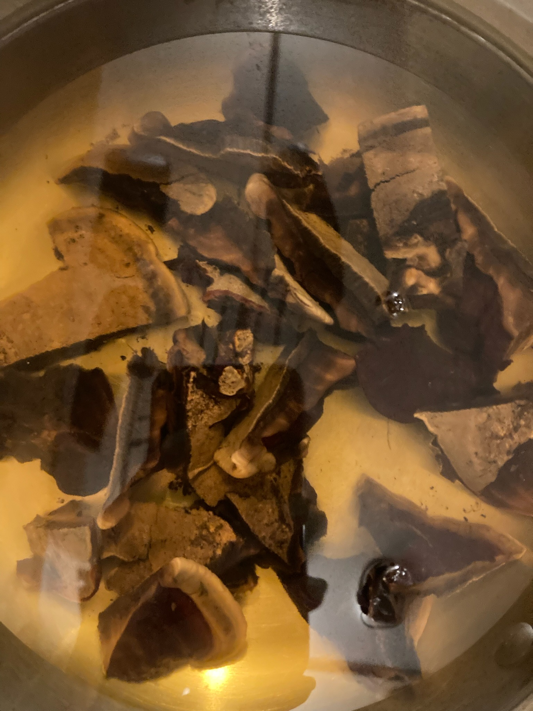
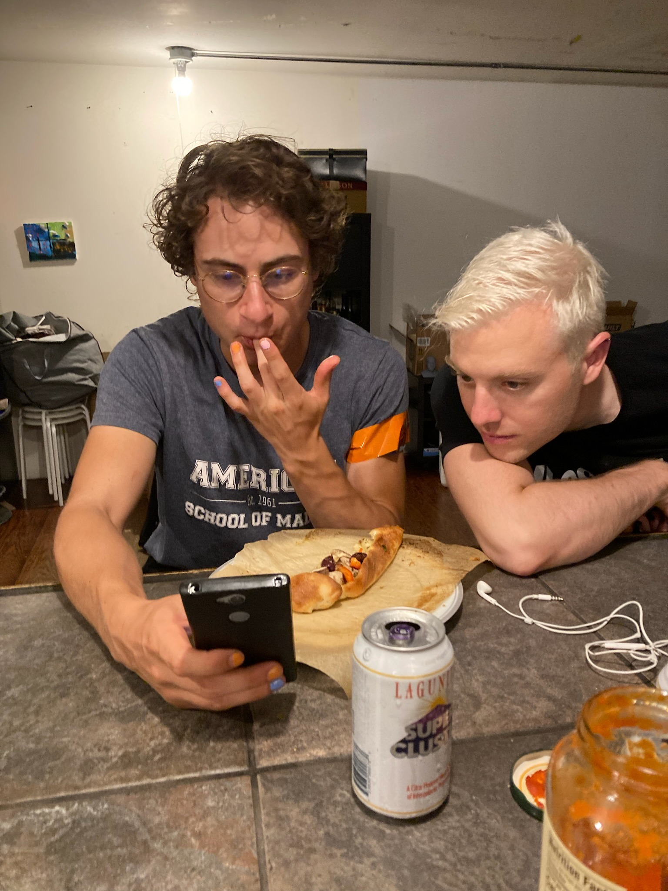
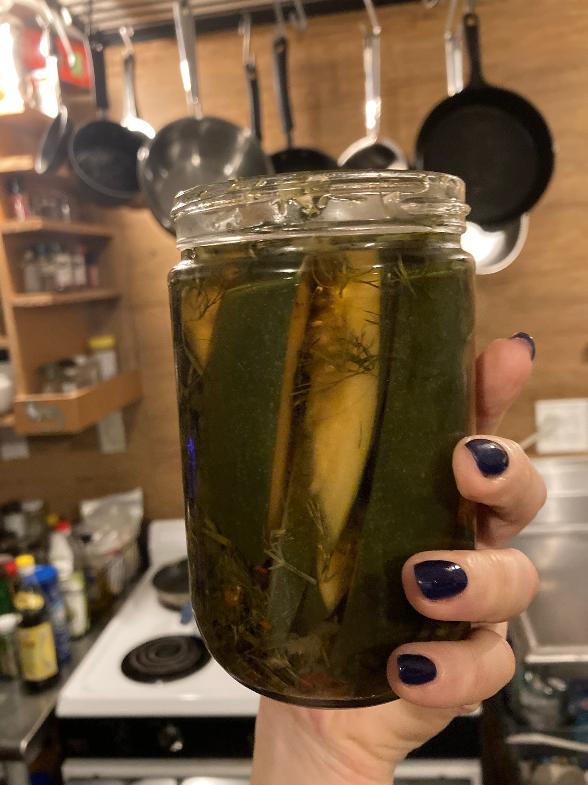
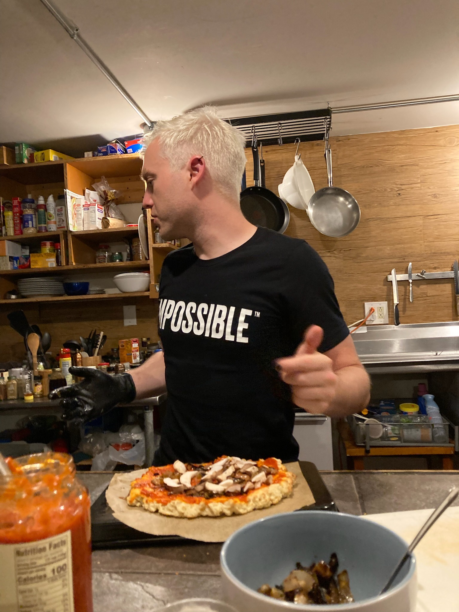
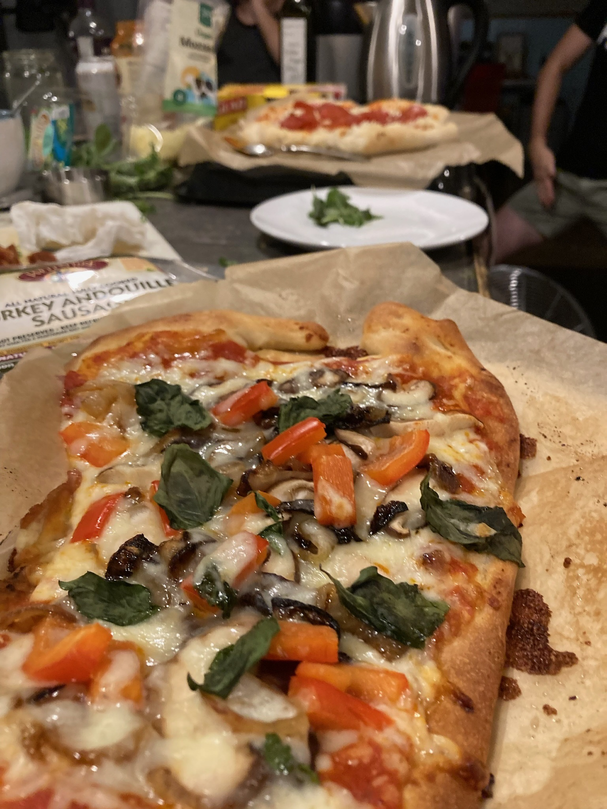
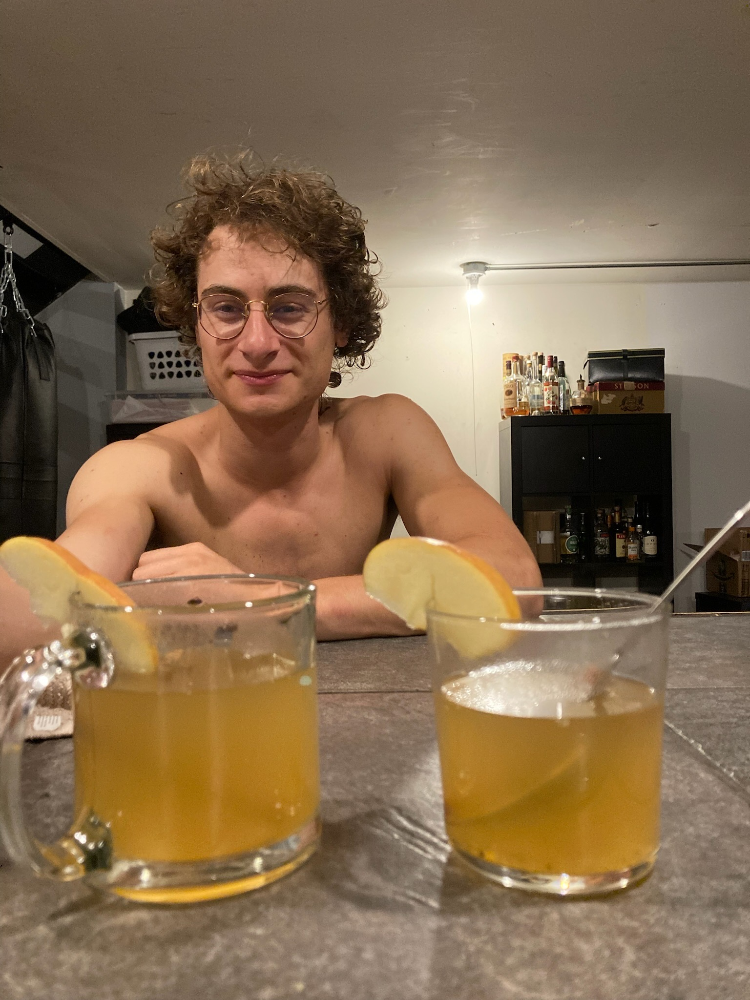
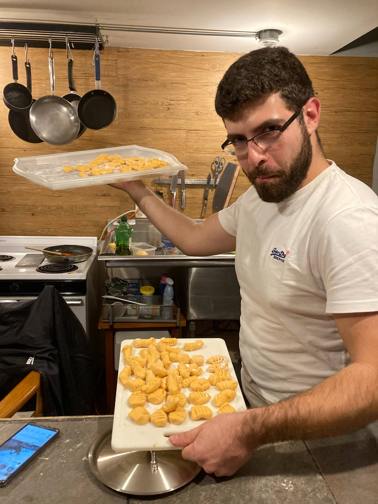
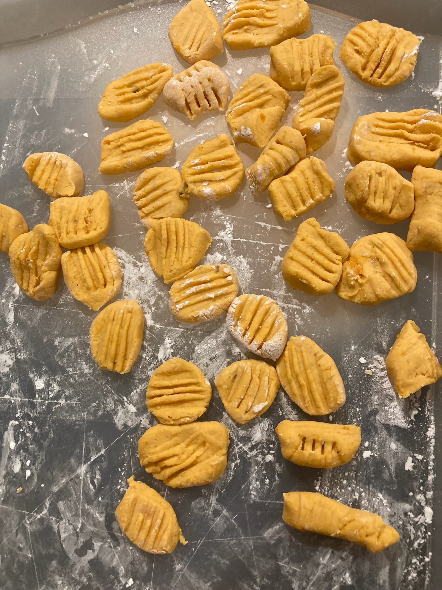